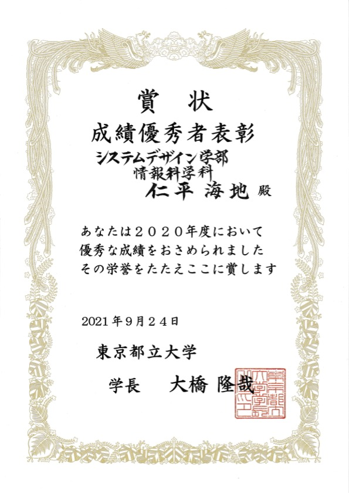
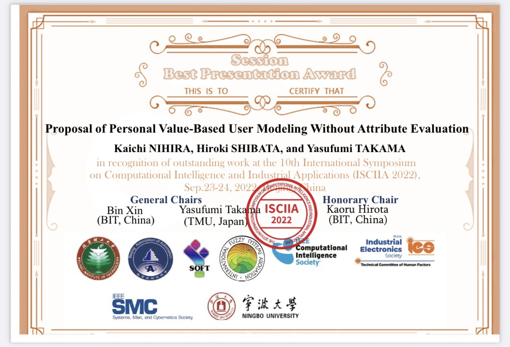

About Me
仁平海地
Kaichi Nihira
東京都立大学システムデザイン研究科システムデザイン専攻情報科学域の修士1年．
高間研究室 (https://krectmt3.sd.tmu.ac.jp/)
でユーザの価値観を用いたアイテムレコメンデーションに関する研究を行なっています．
最近の研究では，「人気アイテム・不人気アイテムに対するユーザのこだわりの強さ」をユーザの価値観として定量的に定義し，メモリベース協調フィルタリングに応用する研究を行いました．
Education
- 2022/04-現在 東京都立大学システムデザイン研究科システムデザイン専攻情報科学域 在学
- 2018/04-2022/03 東京都立大学システムデザイン学部情報科学科 卒業
- 2015/04-2018/03 錦城高等学校普通科 卒業
Experience
インターンシップ
- 2022/08 楽天グループ株式会社
二子玉川夏の陣2022 (5daysインターンシップ) に参加しました．
Paper
口頭発表
- K.Nihira, H.Shibata and Y.Takama, Proposal of Personal Value-Based User Modeling Without Attribute Evaluation, The 10th International Symposium on Computational Intelligence and Industrial Applications ( ISCIIA2022 ) Sep.23- Sep.25, 2022, Beijing, China
Qualfication
- 基本情報技術者
- TOEIC Listening & Reading 775 (2021/01)
Award
- 2021年度東京都立大学システムデザイン学部成績優秀者表彰
- ISCIIA2022 Session Best Presentation Awardhttps://www.sd.tmu.ac.jp/news/prize/10983.html


Product
- 献立を投稿するTwitter Bot ( 現在停止中 ) ( https://github.com/KKaichi/recommend_menu ) 11:00と16:00に楽天レシピから一品献立を投稿，またリプライに対し献立を返信するTwitter bot．
Python，Twitter API，楽天 APIで作成．AWSのEC2で動かしていました．
Contact
e-mail : nihira-kaichi@ed.tmu.ac.jp
gmail : kaichi.sea.earth@gmail.com


© 2022 Kaichi Nihira